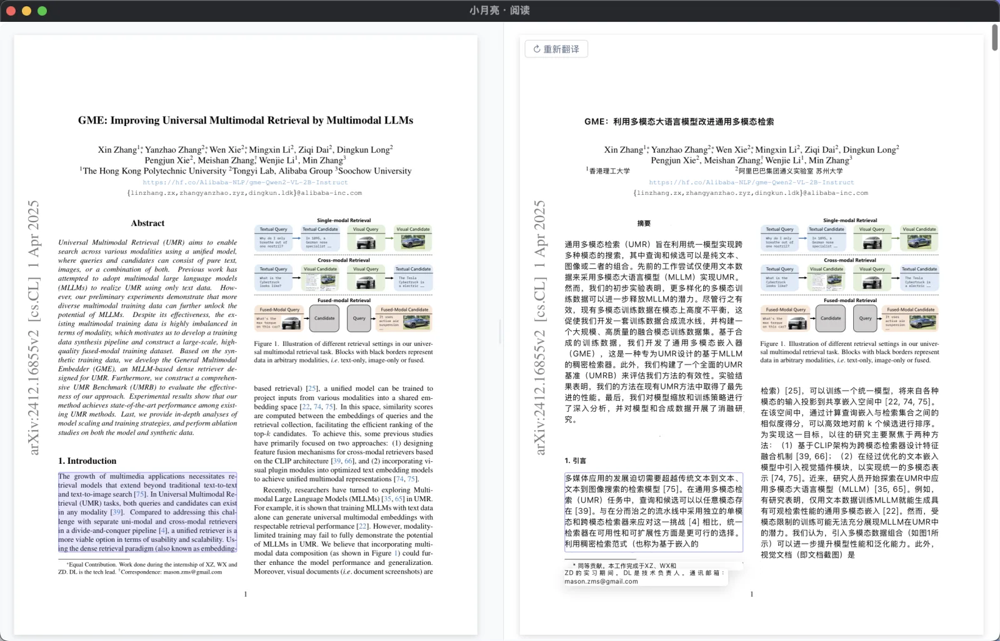
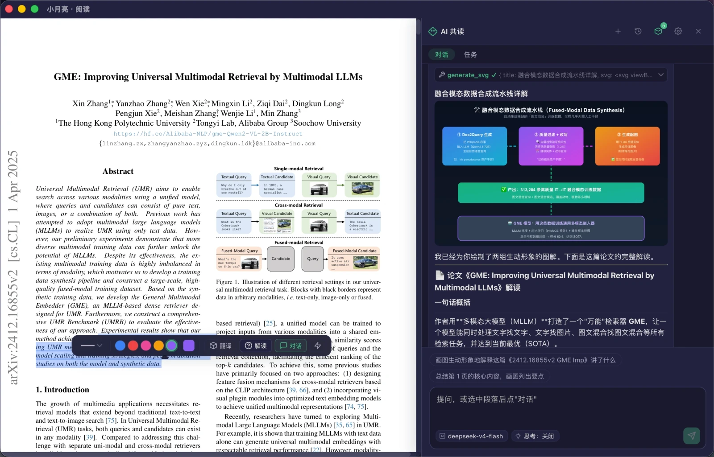
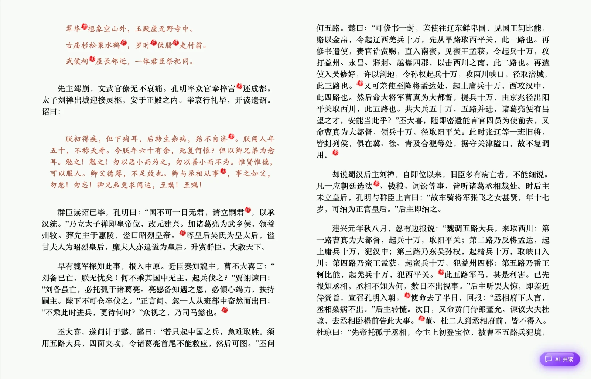

01
发现 · Discover
ArXiv 顶会论文推荐 · 一键阅读
首页智能聚合当日 ArXiv 顶会热门论文，封面式卡片一目了然，轻点即刻进入沉浸阅读，让追踪前沿成为一种享受。
 小月亮阅读器
小月亮阅读器
小月亮阅读器 · moon.jdk.plus
从发现到理解，小月亮陪你走完知识的每一步。
ArXiv 与顶会论文实时聚合，自然语言语义检索直达心仪段落——你的学术雷达，永不眠。
真实界面 · 所见即所得，每一帧都值得细看。
首页智能聚合当日 ArXiv 顶会热门论文，封面式卡片一目了然，轻点即刻进入沉浸阅读，让追踪前沿成为一种享受。

原文与译文段落级并排对照，滚动同步、高亮呼应，跨越语言的门槛，让每一篇外文论文都清晰可读。

选中段落即问即答，AI 帮你拆解公式、梳理脉络、总结贡献，读懂每一个难点，不再独自苦思。

基于神经网络的版面识别，智能还原 PDF / 扫描件中的标题、段落、公式与图表结构；细腻翻页动效、随手标注批注、精心打磨的排版细节，还原纸书般的沉浸，让阅读回归纯粹。
封面式书架陈列管理，导入即归位，拖拽整理一目了然；书架搜索直达书页精确位置，让每一本书都有安放之处。
读过的每一页自动向量化建库，跨书跨文档自然语言检索，提问直达原文精确位置，知识随读随存、越读越懂你。
不止问答——它会记忆、会规划、会委派专家、会审批行动、会执行任务，陪你走完从发现到理解的每一步。
画像 / 文档 / 情景 / 偏好，跨会话自动提取注入
写操作先弹卡确认，60 秒未响应默认拒绝
接入任意 MCP 服务器，工具箱无限扩展
逐章摘要 · 每章笔记 · 闪卡，翻章自动运行
显式任务分解，自评估质量并修正行动
搜索 / 置顶 / 重命名，对话持久不丢失
读过的书自动向量化建库，自然语言跨书检索、直达原文位置
/摘要 /翻译 /闪卡 /笔记，斜杠一键触发
拆解公式 · 梳理贡献
逐行讲解 · 厘清逻辑
双语对照 · 整页翻译
定位章节 · 直达内容
让阅读的每一刻都恰到好处。
选择你的平台，开启深度阅读之旅。